|
Roda JC - Vitesse (2-0) 9 mei 2004 |
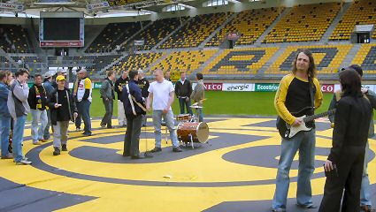
Om 12.00 u. oefende Dogman en een aantal supporters voor hun
optreden in de rust.
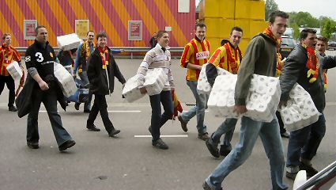
De honderd meegekomen Mechelensupporters namen voor alle
zekerheid hun eigen toiletpapier mee.
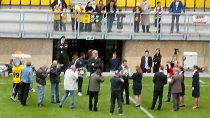
Er wordt afscheidgenomen van Bas Roorda, Marco v Hoogdalem
en Iwan Redan.
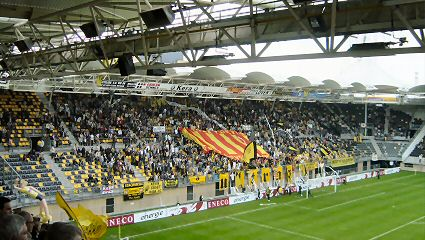
Prikkelende teksten richting Vitesse en Lierse, honderden meters
toiletpapier en het grote spandoek van KVM vormden de
sfeeractie op de west-zijde.
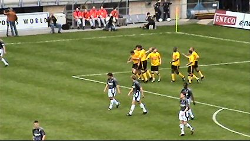
Kevin van Dessel scoort 1-0, (6').
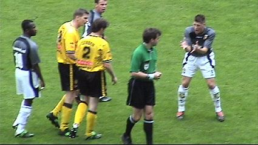
Wegereef was erg mild voor Vitesse door slechts twee maal
geel te trekken.
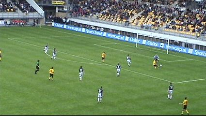
Cristiano krult de bal om Jevric: 2-0, (28').
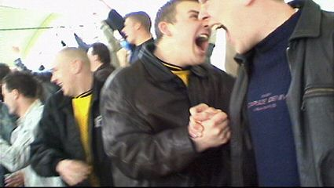
Daar word je vrolijk van!
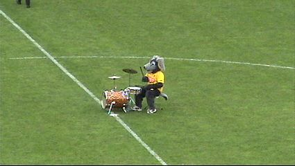
Is dit nou DOG-man????
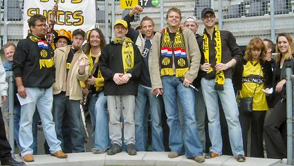
De echte Dogman + supporters spelen de nieuwe Roda-song.
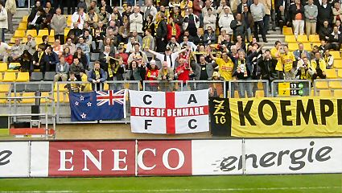
Het publiek, inclusief een groep supporters van Charlton Athletic
swingt lekker mee.
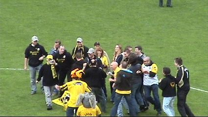
Pogoën in het middenstuk van de Rodasong.
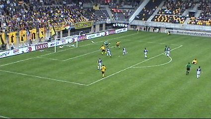
In de tweede helft is het zwak spelende Vitesse iets beter maar
de beste kans is voor Cristiano. Zijn schot stuitert over doel.
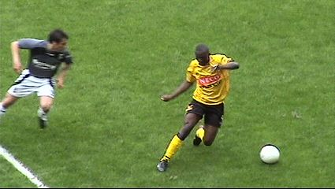
Balgoochelaar Kone draaide zijn opponent voortdurend dol maar
zette ook zichzelf geregeld op het verkeerde been.
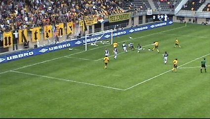
Topkans voor Vicelich die helaas op de keeper schiet.
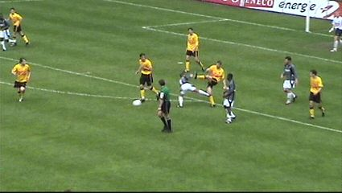
Diepdonkerrood voor deze aanslag op Luijpers' scheenbeen.
Overtreder Hofs ontsnapt met geel.
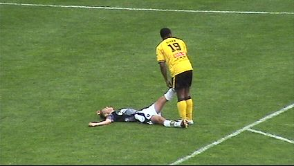
Redan past eerste hulp toe bij een Vitessespeler met kramp.
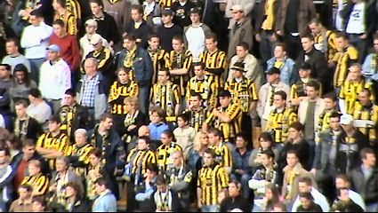
Ach ja, de busreis was gratis....
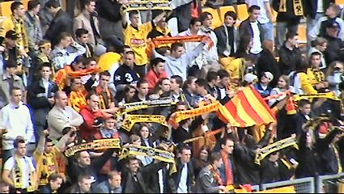
Aan de overkant is men vrolijker...
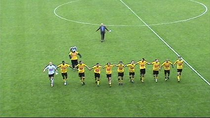
Het blijft leuk!
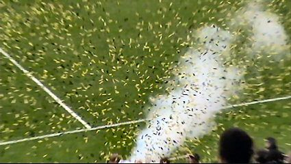
Het seizoen wordt feestelijk afgesloten met confetti-kanonnen.
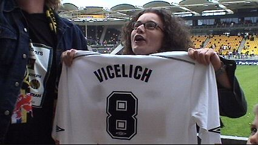
De spelers gooien shirtjes in het publiek en raad eens wie het
tricot van Vicelich ving????
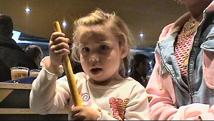
Over twaalf jaar Rodameëdsje op deze site!
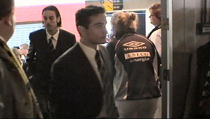
De hele selectie kwam de Kick Off bezoeken.
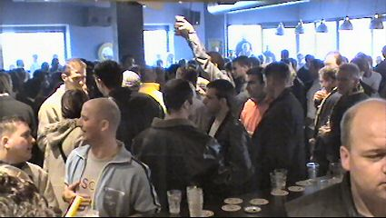
Hier was het eerste uur vrij drinken. Druk dus!
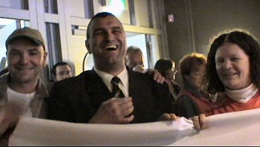
Zo... en dan nu een Bavaria.
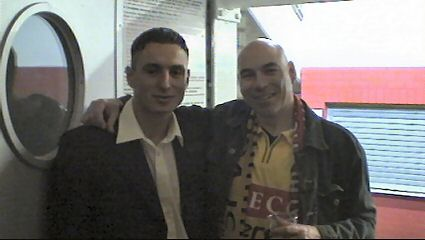
Met Elberkani op de foto (voor Layla....).
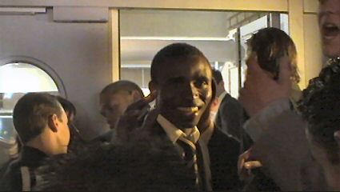
Edrissa Sonko. Snel beter worden vriend!
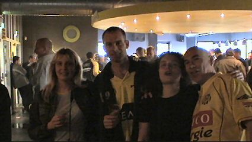
Patje en Melleke waren ook weer gekomen.
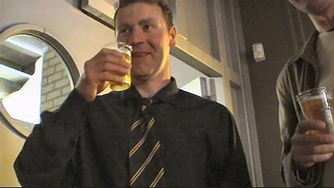
Pieter Baan is trots op zijn Sonkaya-sjlieps.
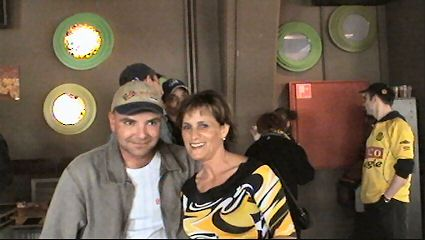
David bedankt Rodameëdsje Yvonne voor de lekkere broodjes.
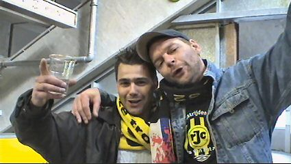
De rechtse meneer is op internet bekend als psxg2 (of zo iets).

Vanuit de Kick willen we naar de Roots gaan, maar dat café
blijkt gesloten. Dan maar afbieren en uitfrieten bij Indians.
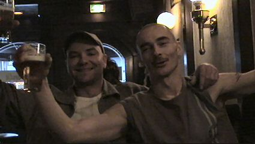
Maar de allerallerlaatste pinten pakken we in 't Brandje.